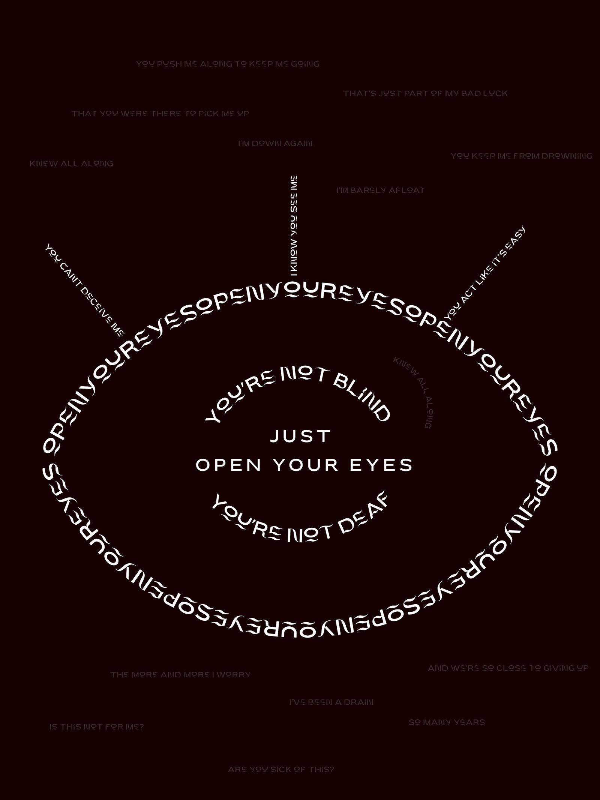
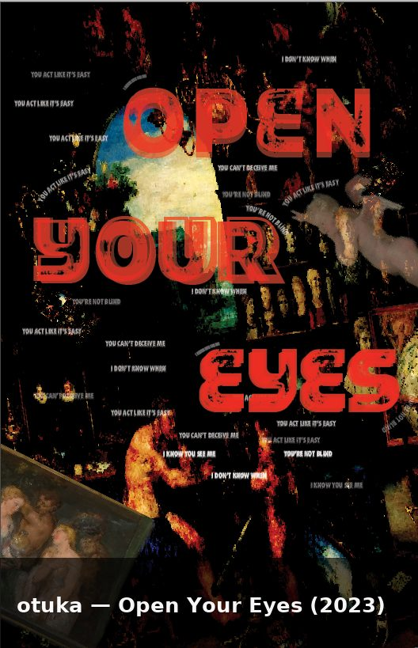
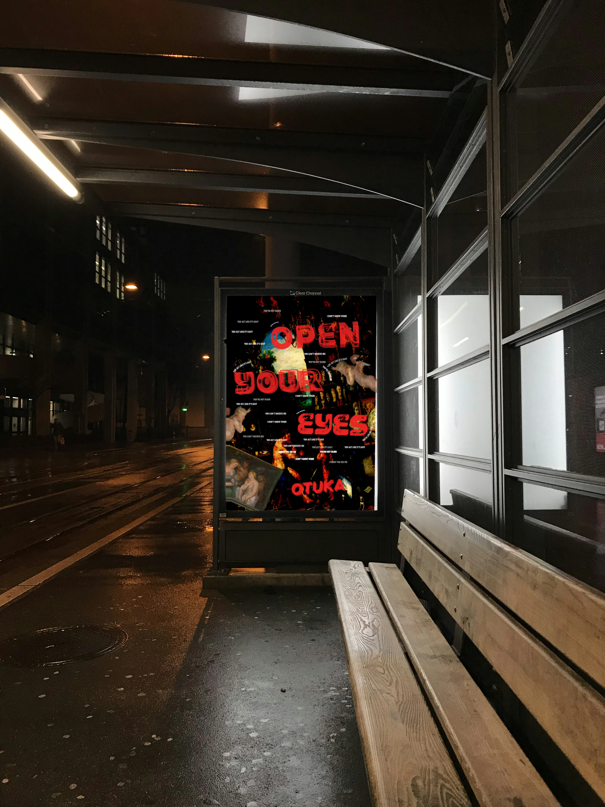
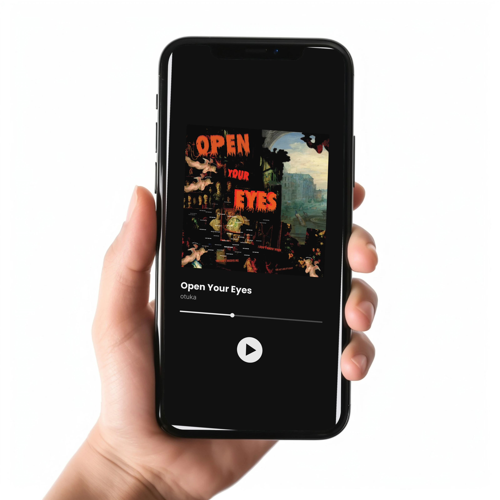
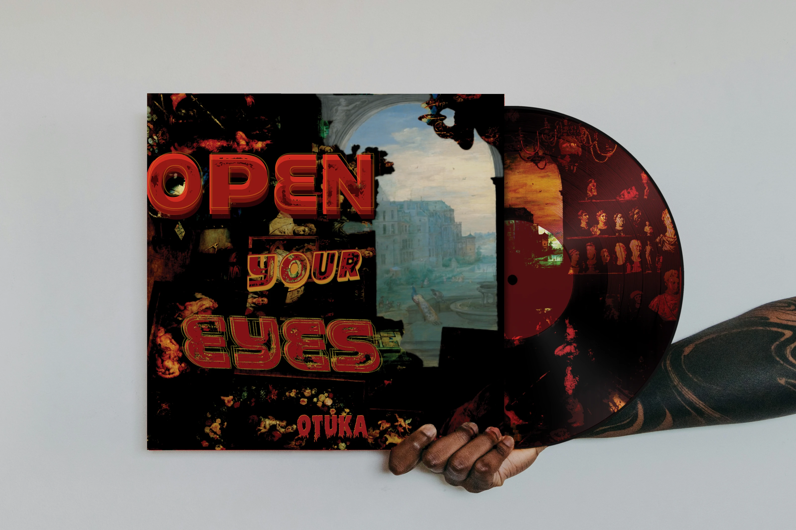
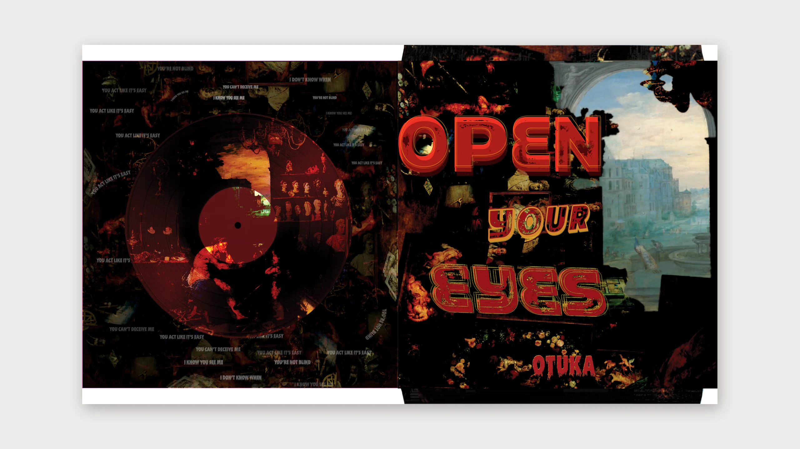
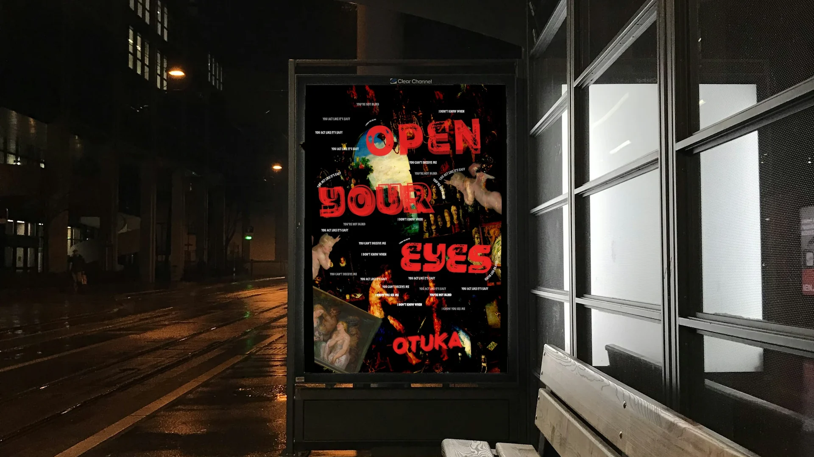
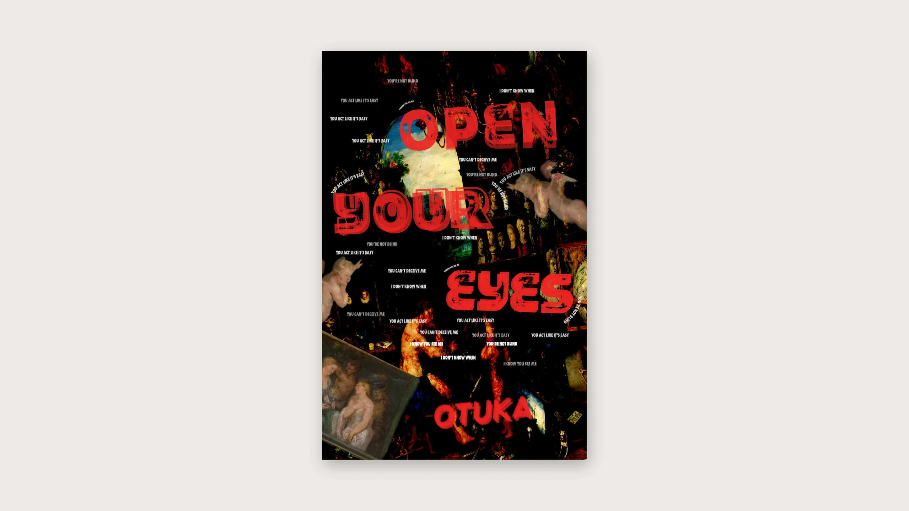
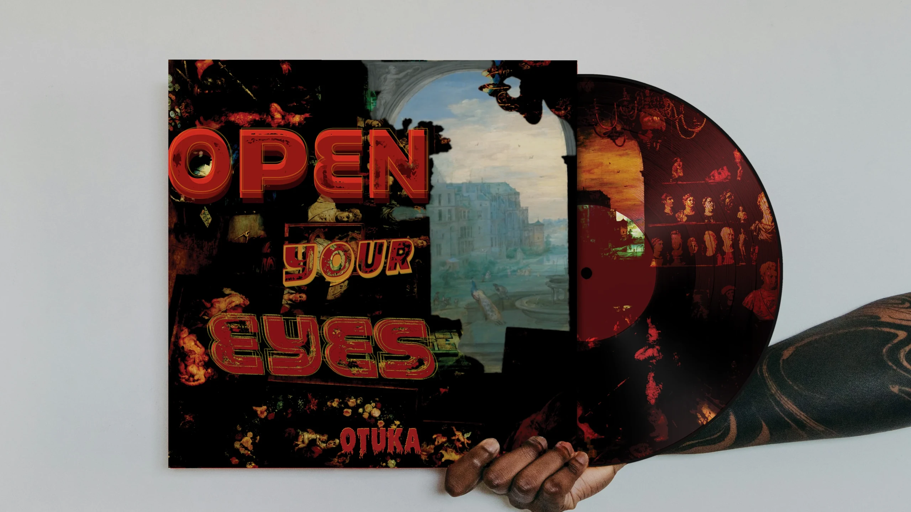

03 / Case study
Otuka — Open Your Eyes
A typography project where the type is the image. I took Otuka's album Open Your Eyes and designed the full release package around it: album art, a poster, a Spotify layout and a vinyl jacket.

Type that looks back
The idea was simple: the words should make you see. On the album art the title repeats around itself until it forms an eye, with the lyrics “you're not blind, just open your eyes” sitting where the pupil would be.
The poster goes the other way: loud, dripping red type over a collage of old paintings and cherubs, with lyric fragments scattered through it like things you only notice on a second look.


On every format
A release lives in a lot of places now, so the system had to work tiny on a phone screen and huge on a 12-inch sleeve. The Spotify layout and the vinyl jacket use the same type logic at very different scales.



Off the screen
The same files, flat on the left and out in the world on the right. Drag the handle to see the poster at a bus stop and the vinyl in someone's hand.



Flat file In the worldStudent concept, not affiliated with the artist.
Next project →